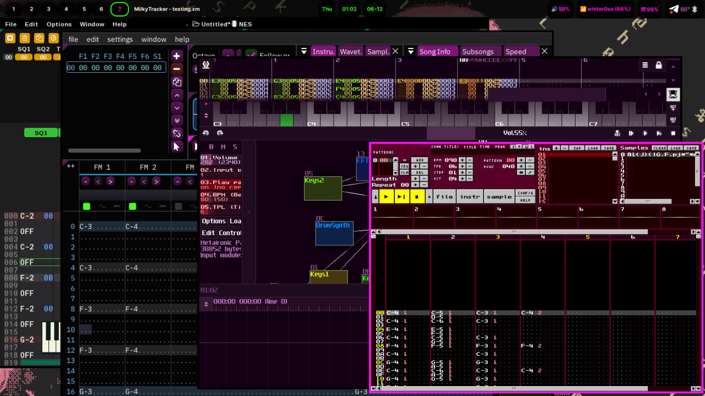

now | blog | wiki | recipes | bookmarks | contact | about | donate
* * * back home * * *
a programmatic method for composing audio productions
Trackers are pieces of audio software that feature a 'tracker-style' interface for programming music and sounds, instead of your typical 'piano roll' style interface you might see in the big-name DAWs (Digital Audio Workstations).
If you've only ever used the more well-known DAWs before, it might look a little daunting when you first sit down in front of a tracker. But don't worry, once you learn how to twiddle the knobs the right way, they're quite fun, and even better, dare I say, than those big-name DAWs, as they give you precise control over everything you're doing in your audio.
Trackers have been used for years by composers for crafting music for video game soundtracks. They have also been used by electronic and experimental composers to create everything from intricate, space-like ambient soundscapes to chiptunes.
Let's de-mystify trackers a bit for you if you're brand new to them.
One of the first things you're going to see when you open up any tracker software is a grid where you place seemingly random numbers and letters. Don't worry - they're not so random. Everything in your tracker software has a purpose, to allow you to manipulate your sounds at even the most granular of levels.
Each vertical column in your tracker represents a track or a channel. Each horizontal row in your tracker represents a moment in time - as if it were a timeline! In your more traditional music sequencing environments found in DAWs, you'd be clicking around in a piano roll with your mouse to form notes and chords. Here, in your tracker, you enter in your musical data in this text-based grid environment, with each character in the grid representing things like note names (C-3, A-5, etc.), octave numbers, effect codes (controlling things such as velocity, slides, vibrato, etc.), and sample/instrument numbers (in order to select the sound you want to manipulate).
If you run GNU/Linux and want to use tracker software to write some music, you will be glad to know that there is certainly no shortage of it to choose from. My personal favorite, and the one I use is the most is Sunvox, which we will cover in the list below.
There's really no "best" tracker software - they all do the same thing, but may have different features. It's all about knowing what you're looking for in your tracker software, and testing out different ones until you find the one you're most comfortable working in.
Here are some of the ones you will find that you can install on GNU/Linux. I have each of these installed on my system right now (Debian Trixie):
.mod files and also offers compatibility with other module formats, such as .xm and .s3m. It gives you a tabbed interface for working with up to 32 modules at the same time, and has a built-in sample/instrument editor for you to generate looped or single/multi-cycle waveforms through Milkytracker's inbuilt synthesizer, known as MilkySynth.~ Music tracker page on Wikipedia is another good place to get the gist of trackers, some good examples of popular ones, and a rundown on the history of trackers.
~ The Tracker's Handbook - a handy resource for learning the fundamentals for audio tracking. It doesn't focus on a singular tracker software (but does use a few as examples). Instead, it teaches the basics that will be found in all audio tracker software.
~ Guide to Trackers by Sonic State is a nice write-up on the history of trackers and some highlights on how they work.